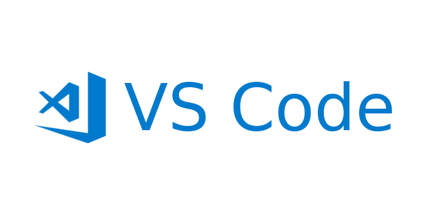

Open Roberta
Uma atividade marcante foi a que utilizamos a Open Roberta.

Cisco
Usamos o Cisco Packet Tracer na maioria das atividades do Ano.

VsCode
As atividades mais marcantes foram a que utilizamos o VsCodeStudio.